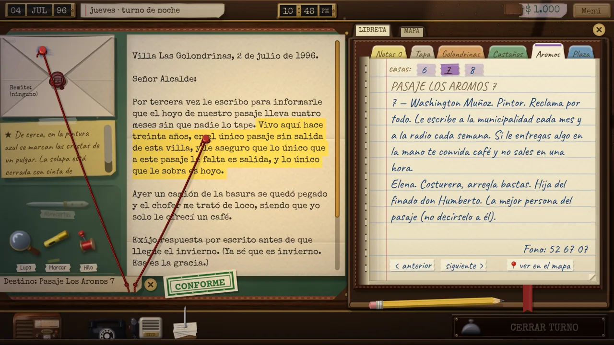
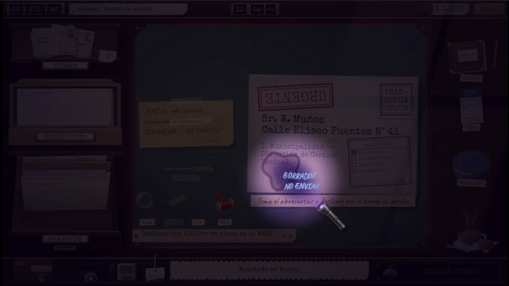
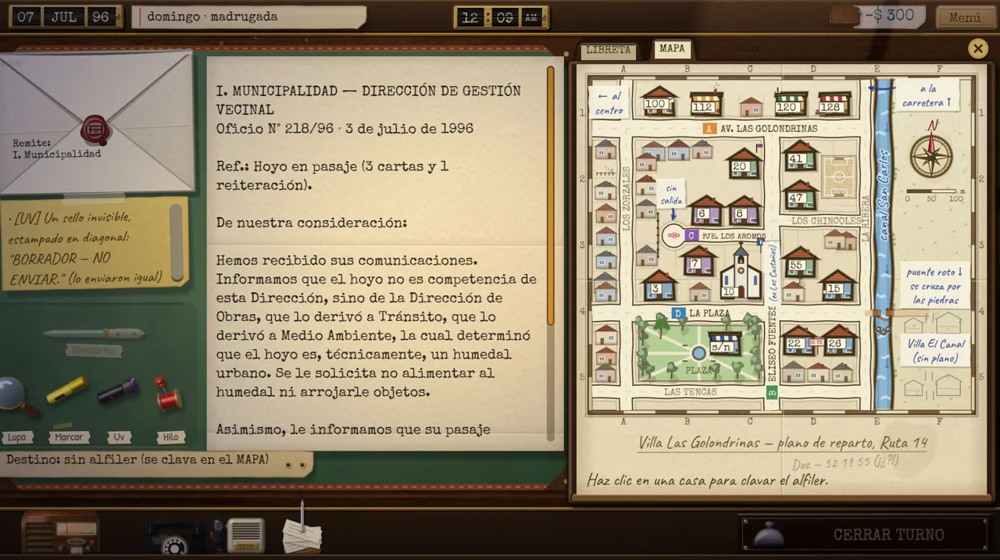
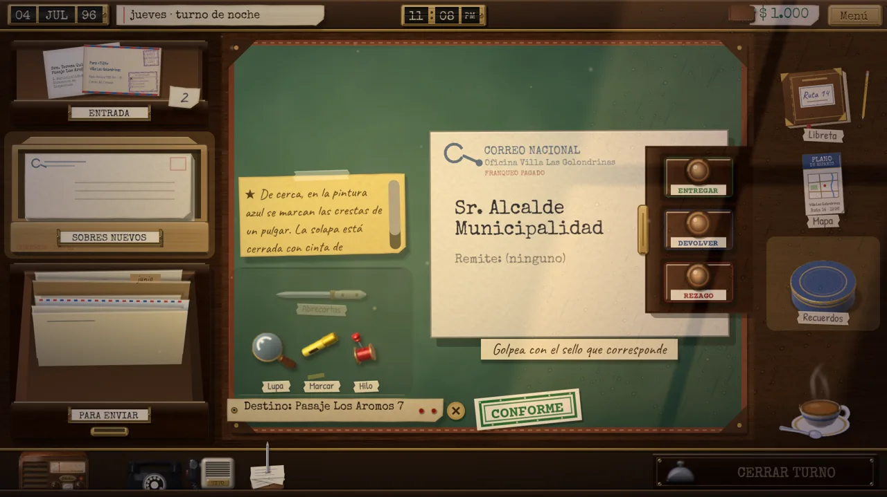

REZAGO: a quien corresponda
Un juego de deducción sobre cartas perdidas, hecho en solitario en Godot 4, de la idea al lanzamiento en poco más de un mes. A deduction game about lost letters, made solo in Godot 4, from idea to release in just over a month.
- Qué hiceWhat I did
- Todo el juego, en solitario: diseño, programación, escritura y dirección de arte, publicado en 8 idiomas para Windows y Mac.The whole game, solo: design, programming, writing and art direction, released in 8 languages for Windows and Mac.
- Qué demuestraWhat it shows
- Llevar un producto de la idea al lanzamiento: sistemas de juego, textos separados del código, empaquetado automático y pruebas con jugadores.Taking a product from idea to launch: game systems, text kept out of the code, automated packaging and playtesting.
- ResultadoOutcome
- Publicado en itch.io en octubre de 2026; sin presupuesto, más de 18.000 vistas en redes y 33 descargas la primera semana.Released on itch.io in October 2026; with no budget, 18,000+ social views and 33 downloads in the first week.
- RolRole
- Todo, en solitarioEverything, solo
- EstadoStatus
- Publicado en octubre de 2026Released in October 2026
- DesarrolloDevelopment
- Poco más de un mesJust over a month
- PlataformasPlatforms
- Windows y Mac · 8 idiomasWindows and Mac · 8 languages
- DuraciónPlaytime
- 1,5 a 2 horas1.5 to 2 hours
- TecnologíaTech
- Godot 4, GDScript, Python
- JugarPlay
- bandioh.itch.io/rezago
El objetivoThe goal
Quería un juego de escritorio en la línea de los juegos de papeleo, pero cálido: en vez de rechazar gente, ayudas a que las cartas lleguen. El reto de diseño era que deducir se sintiera propio. El juego no podía decirte la respuesta, pero tampoco podía dejarte adivinando.
I wanted a desk game in the spirit of paperwork games, but warm: instead of turning people away, you help letters reach them. The design challenge was making each deduction feel earned by the player. The game couldn't tell you the answer, but it couldn't leave you guessing either.
Mi rolMy role
Todo, en solitario: diseño, guion de más de 20 cartas y 3 finales, programación, arte, sonido, localización a 8 idiomas, marketing y publicación. Programé con Claude Code como asistente: yo decidía el diseño, revisaba cada cambio y lo probaba jugando. ChatGPT me ayudó a planear la difusión.
I handled the entire project on my own: design, writing 20+ letters and 3 endings, programming, art, sound, localization into 8 languages, marketing and release. I programmed with Claude Code as an assistant: I made the design calls, reviewed every change and tested it by playing. ChatGPT helped me plan the marketing.
Sistemas destacadosKey systems

- Fundamento con hilo rojo. Entregar no basta: tienes que justificar. Cada dato que lees en la carta se ata a una casa del mapa o a una página de la libreta, y cada hilo bien puesto paga extra.
- Lupa en tiempo real. Un SubViewport vuelve a dibujar la mesa aumentada, así el texto se ve nítido y no pixelado. Lo escondido (tinta UV, marcas finas) vive en una capa de render propia que solo ve la lupa.
- Contenido en datos. Cartas, noches, barrio y textos de interfaz están en archivos de datos, no en el código. Eso permitió traducir a 8 idiomas y que un script de Python audite cada carta (por ejemplo, pistas sin origen en el mapa o la libreta).
- Arte hecho por código. Los objetos están pintados con scripts propios de Python (relieve, luz y textura) sobre texturas libres, para lograr un acabado cálido sin artista.
- Publicación automatizada. Un script exporta y empaqueta las builds de Windows y Mac, y butler las sube a itch.io.
- Red-thread evidence. Delivering isn't enough: you have to justify it. Each fact you read in a letter is tied to a house on the map or a page in the notebook, and every correct thread pays extra.
- Real-time magnifier. A SubViewport redraws the desk magnified, so text stays sharp instead of pixelated. Hidden content (UV ink, fine marks) lives on its own render layer that only the magnifier sees.
- Data-driven content. Letters, nights, the neighborhood and UI text live in data files, not code. That made translating into 8 languages possible and lets a Python script audit every letter (for example, clues with no source on the map or in the notebook).
- Art made with code. Objects are painted by my own Python scripts (relief, lighting and texture) over free textures, for a warm look without an artist.
- Automated release. A script exports and packages the Windows and Mac builds, and butler uploads them to itch.io.
Un fragmento del códigoA piece of the code
## El SubViewport mira la mesa en `m`, aumentada `zoom()` veces, a la resolución de la ventana: nítido.
func _enfocar(m: Vector2) -> void:
var s := _escala_ventana()
var n := int(ceil(RADIO * 2.0 * s * AMPLIO))
if _sub.size != Vector2i(n, n):
_sub.size = Vector2i(n, n)
var z := lerpf(1.0, zoom(), _acerca)
var k := z * s
_sub.oversampling_override = k # la letra se rasteriza al tamaño al que se ve (si no, se ve borrosa)
_sub.canvas_transform = Transform2D(0.0, Vector2(k, k), 0.0, Vector2(n, n) / 2.0 - m * k)
_mat.set_shader_parameter("mundo", m)
_mat.set_shader_parameter("abarca", RADIO * 2.0 / z)
_mat.set_shader_parameter("enfoque", _acerca)


Qué cambió con los playtestsWhat playtesting changed
Hice playtests frecuentes de partidas completas durante todo el desarrollo. Después de cada una ordené lo observado en bugs, mejoras y decisiones de diseño antes de tocar código. Cuatro ejemplos:
I ran frequent full-playthrough playtests throughout development. After each one I sorted what I observed into bugs, improvements and design decisions before touching any code. Four examples:
AntesBefore
Solo valía el dato exacto que yo había previsto. Hilos razonables se rechazaban y el jugador sentía que el juego le leía la mente mal.Only the exact fact I had planned counted. Reasonable threads were rejected, and players felt the game was misreading their minds.DespuésAfter
Vale cualquier dato de la carta unido a la casa correcta. Se premia el razonamiento, no adivinar mi intención.Any fact from the letter tied to the right house counts. It rewards reasoning instead of guessing my intent.AntesBefore
Ampliaba la imagen de la pantalla, así que la letra chica se veía borrosa justo donde estaban las pistas.It scaled up the screen image, so small text blurred right where the clues were.DespuésAfter
La rehice para que dibuje la mesa de nuevo a mayor resolución, con vidrio abombado y revelado de la tinta UV letra por letra.I rebuilt it to redraw the desk at higher resolution, with a curved lens and UV ink revealed letter by letter.AntesBefore
Lo que decía un vecino por teléfono se perdía al colgar, y había que volver a llamar.What a neighbor said on the phone was lost when you hung up, so you had to call again.DespuésAfter
La última llamada queda anotada en un papelito junto al teléfono, y también se puede atar con hilo como prueba.The last call is jotted down on a slip next to the phone, and it can also be tied with thread as evidence.AntesBefore
Para revisar el sobre había que cerrar la carta, y muchas pistas exigen mirar los dos a la vez.To check the envelope you had to close the letter, and many clues require looking at both at once.DespuésAfter
Un clic trae el sobre al centro, al lado de la carta abierta, y vuelve solo a su lugar.One click brings the envelope to the center, next to the open letter, and it returns to its place on its own.LanzamientoLaunch
Sin presupuesto: tráilers, videos cortos en TikTok, Reels y Shorts, y un post en r/chilegames. Resultados de la primera semana:
No budget: trailers, short videos on TikTok, Reels and Shorts, and a post on r/chilegames. First-week results:
Qué aprendíWhat I learned
- Probar una partida completa enseña más que diez pruebas de una pantalla: los problemas de ritmo solo aparecen al final.
- Guardar el contenido como datos desde el día uno ahorra semanas al traducir y al corregir.
- Con IA, el trabajo se mueve a decidir y verificar: escribir buenas reglas de diseño y comprobar cada cambio jugando.
- Los videos cortos que muestran una carta concreta funcionaron mucho mejor que el tráiler: 7.300 visualizaciones en TikTok contra 121 en YouTube.
- A full playthrough teaches more than ten single-screen tests: pacing problems only show up at the end.
- Storing content as data from day one saves weeks when translating and fixing.
- With AI, the work shifts to deciding and verifying: writing clear design rules and checking every change by playing.
- Short videos showing one specific letter worked far better than the trailer: 7,300 views on TikTok versus 121 on YouTube.